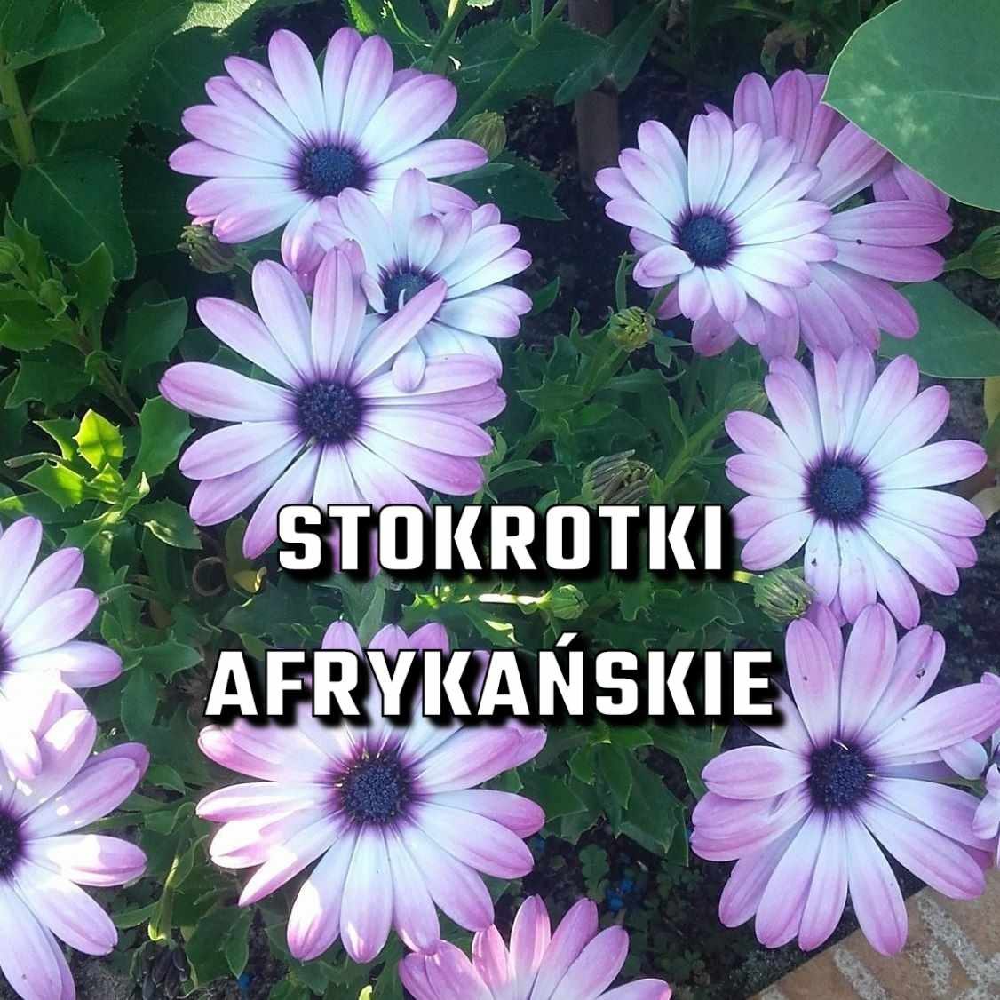
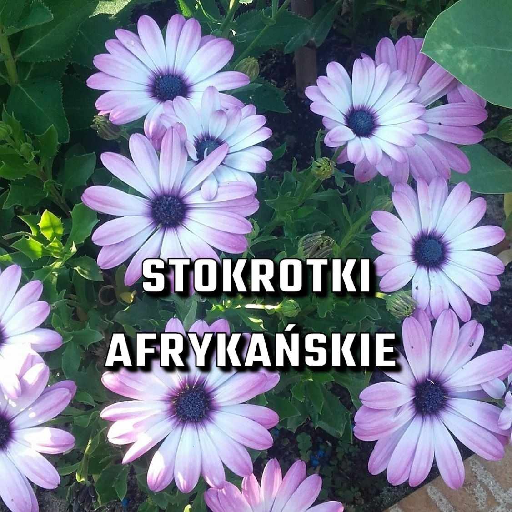

Witaj na stronie internetowej poświęconej kwiatom doniczkowym dla naszej wspólnoty współlokatorów i sąsiadów! Jeśli jesteś miłośnikiem roślin i chcesz wiedzieć, jak zadbać o nasze kolorowe przyjaciółki, to trafiłeś we właściwe miejsce.
Jednym z najważniejszych aspektów pielęgnacji roślin doniczkowych jest odpowiednie podlewanie. Właściwa ilość wody ma kluczowe znaczenie dla zdrowia i wzrostu roślin. Dlatego chcielibyśmy podzielić się prostym, ale skutecznym sposobem, aby sprawdzić, czy ziemia w doniczce jest gotowa na kolejne podlewanie.
Aby to zrobić, potrzebujesz zaledwie kilku prostych narzędzi - patyczka drewnianego oraz chwili twojego czasu. Gdy zastanawiasz się, czy dana roślina potrzebuje wody, włóż patyczek do gleby w doniczce jak najgłębiej. Następnie delikatnie go wyjmij.
Jeśli patyczek jest suchy lub prawie suchy, oznacza to, że ziemia jest gotowa na podlewanie. Jeżeli jednak jest wilgotny lub pokryty ziemią, oznacza to, że gleba jest jeszcze dostatecznie nawilżona i nie potrzebuje więcej wody. Pamiętaj, że nie wszystkie rośliny mają takie same wymagania dotyczące podlewania, więc sprawdzaj każdą z nich indywidualnie.
Znając ten prosty trik, będziesz mógł z pewnością określić, kiedy nasze rośliny potrzebują nawadniania. Pamiętaj również, że istotne jest utrzymanie regularności podlewania, ale zawsze z umiarem, aby uniknąć nadmiernego namaczania korzeni.
Przy okazji, chcielibyśmy przypomnieć Ci o jeszcze jednym ważnym aspekcie pielęgnacji roślin doniczkowych - nawożeniu. Chociaż ziemia dostarcza roślinom niezbędne składniki odżywcze, regularne dostarczanie dodatkowych substancji odżywczych poprzez nawożenie może pomóc w utrzymaniu zdrowych i pięknych roślin. Co drugie do trzecie podlanie rośliny, rozcieńcz jedną zakrętkę nawozu w litrze przefiltrowanej wody.
Zapraszamy do eksplorowania strony, gdzie znajdziesz wiele przydatnych wskazówek dotyczących aspektów pielęgnacji konkretnych roślin doniczkowych. W ten sposób pomożemy Ci stworzyć piękne i ożywione przestrzenie we współdzielonym mieszkaniu.
Sprawdź wymagania poszczególnych roslin:


 
